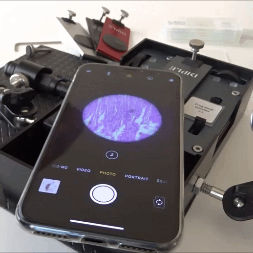

Blindagem Operacional
Garantia de Campo
Conceito "Pré-Selo": Audite sua própria produção antes da fiscalização oficial. Evite rejeição de carga por contaminação visível.
Fitossanidade
Detecção precoce de Ferrugem Asiática, Ácaros e Leveduras. Identifique o problema enquanto ele ainda é controlável.
Laudo Visual
Gere evidências técnicas indiscutíveis. Uma foto microscópica com timestamp vale mais que mil relatórios escritos.
Infraestrutura Científica Integrada
Sua assinatura ou aquisição garante acesso ao ecossistema óptico mais versátil da América do Sul para smartphones e tablets. O kit é composto por:
-
Sistema de 6 Lentes Objetivas:
Uma linha completa que cobre desde a macroscopia até a microbiologia avançada. -
Fine Stage & Standard Stage:
Plataforma mecânica de precisão micrométrica e palco manual para agilidade. -
Estojo Rígido de Campo:
Proteção robusta IP64 contra poeira e respingos, ideal para operações. -
Acessórios Técnicos:
Régua micrométrica, 100 lamínulas, lâminas preparadas, pinça e pipeta.

Os 4 Modos de Iluminação
Manipule a luz para diferentes necessidades diagnósticas através de filtros e fontes LED.
Campo Claro (Bright-field)
O modo padrão para visualizar amostras biológicas translúcidas e lâminas coradas.
Campo Escuro (Dark-field)
Ideal para observar amostras vivas sem corantes, destacando bordas contra um fundo escuro.
Luz Polarizada (Polarized)
Utiliza filtros polarizadores inclusos para analisar cristais, minerais e fibras birrefringentes.
Luz Refletida (Reflected)
Fontes de luz superiores para analisar superfícies opacas, como metais e componentes.
Especificações das 6 Lentes Objetivas
Visão panorâmica para botânica e inspeção de tecidos.
Detalhamento de superfícies e pequenos parasitas.
O equilíbrio ideal para biologia celular e análises clínicas.
0,9 μm real. Visualiza células sanguíneas com nitidez profissional.
O limite da potência óptica portátil para identificação bacteriana.
Pronto para levar o LabMob à sua operação?
Entre em contato e receba uma proposta ajustada ao ritmo e à escala do seu negócio.
Governança, Suporte e Garantias
| Pilar | Garantia LABMOB™ | Benefício do Assinante |
|---|---|---|
| Continuidade | Substituição técnica de componentes durante a vigência do contrato. | Sua ciência nunca para por falha de hardware. |
| Suporte | Canal especializado para calibração óptica e suporte aos 4 modos de luz. | Maximização do uso da tecnologia de precisão. |
| Upgrade Ready | Acesso prioritário às novas versões mecânicas e eletrônicas. | Prioridade na fila de inovação. |
| Conformidade | Licenciamento estruturado sob as normativas técnicas nacionais (RUO). | Segurança jurídica total para sua instituição. |
| IA Ready | Infraestrutura preparada para integração com módulos de IA. | Sua estrutura pronta para o futuro do diagnóstico automatizado. |
O SISTEMA LABMOB™ PRO Versão Ø entrega qualidade equiparada a microscópios de bancada:
Com resolução de até 0,7 microns, o sistema supera a maioria dos microscópios educacionais padrão, entregando nitidez profissional para bactérias e células sanguíneas.
Dúvidas Frequentes
Funciona em qualquer celular?
Sim. O sistema óptico da LabMob é universal. O design da plataforma se adapta a qualquer posição de câmera (central ou lateral) e funciona em Android e iOS. Tablets também são compatíveis.
O que acontece se o equipamento quebrar?
Nosso modelo é de assinatura com garantia total. Se houver falha técnica natural, trocamos imediatamente sem custo. Em caso de dano acidental, perda ou roubo, o contrato prevê uma taxa de reposição subsidiada, muito menor que o custo de um equipamento novo.
Posso cancelar antes do prazo?
Sim. Porém, como concedemos isenção de setup e benefícios de longo prazo, aplica-se uma indenização compensatória equivalente a 3 mensalidades vigentes para cobrir os custos operacionais da infraestrutura já disponibilizada.
Por que escolher o licenciamento LABMOB™ em vez de um microscópio comum?
Porque acreditamos em uma ciência sem fronteiras. Enquanto o microscópio de bancada exige infraestrutura fixa e alto custo, o LABMOB™ entrega mobilidade e escalabilidade. É a solução ideal para triagem epidemiológica, auditoria visual em campo e diagnósticos de borda. Você não adquire um equipamento; você acessa uma infraestrutura completa, atualizável e pronta para os desafios da indústria moderna.